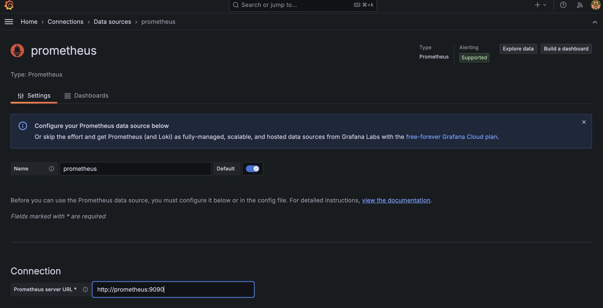

Table Of Contents
Introduction
Monitoring is an essential aspect of any production application. It helps you track the health, performance, and reliability of your application in real-time. In this article, we will walk through how to set up monitoring for a Laravel application using Node Exporter, Blackbox Exporter, Prometheus, Grafana, and Alertmanager.
With this setup, you will be able to monitor both your server metrics (like CPU, memory usage, etc.) and your application’s HTTP endpoints, visualize the data using Grafana dashboards, and set up alerting for issues like downtime or resource exhaustion.
Application Monitoring Setup
Prerequisites
- Docker and Docker Compose installed on your local machine.
- A Laravel application running on local development using docker.
- Git installed on local machine.
Why This Stack?
- Prometheus: An open-source systems monitoring and alerting toolkit. It collects metrics from configured targets at given intervals.
- Node Exporter: Exposes hardware and operating system metrics, such as CPU usage, memory, and disk space.
- Blackbox Exporter: Probes external endpoints to monitor their availability and performance.
- Grafana: A visualization tool to display data from Prometheus in user-friendly dashboards.
- Alertmanager: Sends alerts based on the conditions defined in Prometheus, allowing you to receive notifications in email, Slack, etc.
Code Setup
All the code for this demo is available in the Github code repository here. Clone the repository by using below command.
# clone git repository
git clone https://github.com/ReddyPrashanth/laravel-monitoring.git
cd laravel-monitoring
Docker Compose Setup
To make the setup easier, we will use Docker Compose to run all our services (Prometheus, Node Exporter, Blackbox Exporter, Grafana, and Alertmanager). Our demo code contains a docker-compose.yml file with the following content:
x-app-environment: &appEnvironment
APP_NAME: ${APP_NAME}
APP_URL: ${APP_URL}
APP_KEY: ${APP_KEY}
APP_DEBUG: ${APP_DEBUG}
APP_ENV: ${APP_ENV}
DB_CONNECTION: ${DB_CONNECTION}
DB_HOST: ${DB_HOST}
DB_PORT: ${DB_PORT}
DB_DATABASE: ${DB_DATABASE}
DB_USERNAME: ${DB_USERNAME}
DB_PASSWORD: ${DB_PASSWORD}
SESSION_DRIVER: ${SESSION_DRIVER}
SESSION_LIFETIME: ${SESSION_LIFETIME}
SESSION_ENCRYPT: ${SESSION_ENCRYPT}
SESSION_PATH: ${SESSION_PATH}
SESSION_DOMAIN: ${SESSION_DOMAIN}
BROADCAST_CONNECTION: ${BROADCAST_CONNECTION}
FILESYSTEM_DISK: ${FILESYSTEM_DISK}
QUEUE_CONNECTION: ${QUEUE_CONNECTION}
x-database-environment: &databaseEnvironment
MYSQL_DATABASE: ${DB_DATABASE}
MYSQL_USER: ${DB_USERNAME}
MYSQL_PASSWORD: ${DB_PASSWORD}
MYSQL_ROOT_PASSWORD: ${DB_PASSWORD}
SERVICE_TAGS: dev
SERVICE_NAME: mysql
networks:
cicd:
volumes:
db_data:
driver: local
grafana_data:
driver: local
services:
mysql:
image: mariadb:10.6
restart: unless-stopped
tty: true
ports:
- "3307:3306"
healthcheck:
test: ["CMD", "mysqladmin", "ping", "-h", "localhost"]
interval: 10s
timeout: 10s
retries: 3
environment:
<<: [*databaseEnvironment]
volumes:
- db_data:/var/lib/mysql
networks:
- cicd
app:
build:
context: .
dockerfile: php.dockerfile
ports:
- "80:80"
volumes:
- ./src:/var/www/html:delegated
networks:
- cicd
depends_on:
mysql:
condition: service_healthy
environment:
<<: [*appEnvironment]
# Prometheus service
prometheus:
image: prom/prometheus:latest
container_name: prometheus
volumes:
- ./conf/prometheus/prometheus.yml:/etc/prometheus/prometheus.yml
- ./conf/prometheus/alert.rules.yml:/etc/prometheus/alert.rules.yml
ports:
- "9090:9090" # Expose Prometheus on port 9090
networks:
- cicd
# Grafana service
grafana:
image: grafana/grafana:latest
container_name: grafana
environment:
- GF_SECURITY_ADMIN_PASSWORD=admin
ports:
- "3000:3000" # Expose Grafana on port 3000
networks:
- cicd
volumes:
- grafana_data
# Node Exporter service
node-exporter:
image: prom/node-exporter:latest
container_name: node-exporter
ports:
- "9100:9100" # Expose Node Exporter on port 9100
networks:
- cicd
# Blackbox Exporter service
blackbox-exporter:
image: prom/blackbox-exporter:latest
container_name: blackbox-exporter
ports:
- "9115:9115" # Expose Blackbox Exporter on port 9115
networks:
- cicd
alertmanager:
image: prom/alertmanager:latest
container_name: alertmanager
volumes:
- ./conf/prometheus/alertmanager.yml:/etc/alertmanager/alertmanager.yml
command:
- "--config.file=/etc/alertmanager/alertmanager.yml"
ports:
- 9093:9093
networks:
- cicd
Configure Prometheus
Configure Prometheus to scrape metrics from Node Exporter, Blackbox Exporter, and itself. I have placed a prometheus.yml configuration file file under conf/prometheus folder.
# prometheus/prometheus.yml
global:
scrape_interval: 15s # How often to scrape targets
evaluation_interval: 15s # How often to evaluate rules
rule_files:
- /etc/prometheus/alert.rules.yml # Path to alert rules
alerting:
alertmanagers:
- static_configs:
- targets: ["alertmanager:9093"]
scrape_configs:
# Scrape the Prometheus itself
- job_name: "prometheus"
static_configs:
- targets: ["prometheus:9090"]
# Scrape Node Exporter (System Metrics)
- job_name: "node-exporter"
static_configs:
- targets: ["node-exporter:9100"]
# Scrape Blackbox Exporter (API Monitoring)
- job_name: "blackbox"
metrics_path: /probe
params:
module: [http_2xx] # Monitor HTTP status codes 200-299
static_configs:
- targets:
# Replace with your API URL
- http://app:80/up
relabel_configs:
- source_labels: [__address__]
target_label: __param_target
- source_labels: [__param_target]
target_label: instance
- target_label: __address__
replacement: blackbox-exporter:9115 # Blackbox Exporter target
Here:
- Node Exporter scrapes system metrics.
- Blackbox Exporter monitors the health of the Laravel app by checking the /health endpoint.
- Prometheus scrapes itself to monitor its own performance.
Configure Alertmanager
Now, let's configure Alertmanager to handle alerts and send notifications to a specified channel (e.g., email or Slack). I have created an alertmanager.ymlfile inside the conf/prometheus folder.
global:
resolve_timeout: 5m # How long to wait before resolving an alert
route:
receiver: "email_notifications"
group_wait: 30s
group_interval: 5m
repeat_interval: 3h
receivers:
- name: "email_notifications"
email_configs:
- to: "TO_ADDRESS"
from: "FROM_ADDRESS"
smarthost: "MAIL_HOST"
auth_username: "MAIL_USERNAME"
auth_password: "MAIL_PASSWORD"
require_tls: false #Use this for local development
Add Alert Rules for Prometheus
Define alert rules for Prometheus. For example, if CPU usage goes above 90%, or if the Laravel app's health endpoint is unreachable. Create an alert.rules.yml file inside the conf/prometheusfolder.
groups:
- name: node_exporter_alerts
rules:
# Alert for High CPU Usage
- alert: HighCPUUsage
expr: 100 - (avg by (instance) (rate(node_cpu_seconds_total{mode="idle"}[5m])) * 100) > 90
for: 5m
labels:
severity: warning
annotations:
summary: "High CPU usage on {{ $labels.instance }}"
description: "CPU usage has been over 90% for more than 5 minutes."
# Alert for Low Available Memory
- alert: LowMemory
expr: (node_memory_MemAvailable_bytes / node_memory_MemTotal_bytes) * 100 < 10
for: 5m
labels:
severity: critical
annotations:
summary: "Low memory available on {{ $labels.instance }}"
description: "Less than 10% of memory available for more than 5 minutes."
- name: blackbox_exporter_alerts
rules:
# Alert for API Unavailability
- alert: APIEndpointDown
expr: probe_success == 0
for: 1m
labels:
severity: critical
annotations:
summary: "API Endpoint Down"
description: "The API endpoint at {{ $labels.instance }} is down."
# Alert for High Response Time
- alert: HighResponseTime
expr: probe_duration_seconds > 5
for: 5m
labels:
severity: warning
annotations:
summary: "High Response Time for {{ $labels.instance }}"
description: "The response time for {{ $labels.instance }} has been greater than 1 second for more than 5 minutes."
Start the Stack
Now that the configuration is done, you can bring up the services using Docker Compose. Below command will launch Prometheus, Node Exporter, Blackbox Exporter, Grafana, and Alertmanager.
docker compose up -d
List of services:
- Laravel app will run on http://localhost
- Prometheus will run on http://localhost:9090
- Grafana will run on http://localhost:3000
- Alertmanager will run on http://localhost:9093
- Node exporter will run on http://localhost:9100
- Blackbox exporter will run on http://localhost:9115
Configure Grafana Dashboards
- Open Grafana at http://localhost:3000 and log in with the credentials (default admin/admin).
-
Add Prometheus as a data source:
- Navigate to Configuration > Data Sources.
- Add a new data source and choose Prometheus. 
- Set the URL to http://prometheus:9090 and click save button at the bottom.
-
Import pre-built dashboards for Node Exporter:
- Go to Create > Import and use Dashboard ID 1860 for Node Exporter metrics.
- Create a custom dashboard to visualize your Laravel app's health endpoint using data from Blackbox Exporter.
Verify Alerts
You can check active alerts in the Prometheus UI at http://localhost:9090/alerts.
Test the alerts by:
- Simulating high CPU usage or resource exhaustion on the server.
- Bringing down the Laravel application to test the downtime alert.
You should receive an email (or notification on your preferred platform) when the alerts are triggered.
Bring down the Laravel application using below command. Once the application is down you should receive an email notification.
# This will bring laravel application into maintenance mode
docker compose exec app php artisan down
Conclusion
By setting up Prometheus, Node Exporter, Blackbox Exporter, Grafana, and Alertmanager, you now have a powerful monitoring system for your Laravel application and server infrastructure. This stack will help you proactively monitor resource usage, performance issues, and application availability, while providing real-time alerts and insightful visualizations for better decision-making.
This setup is highly extensible, and you can continue to add more exporters (e.g., database exporters, Redis exporters) or set up additional alerts as your application grows.
For questions and queries please reach via below email